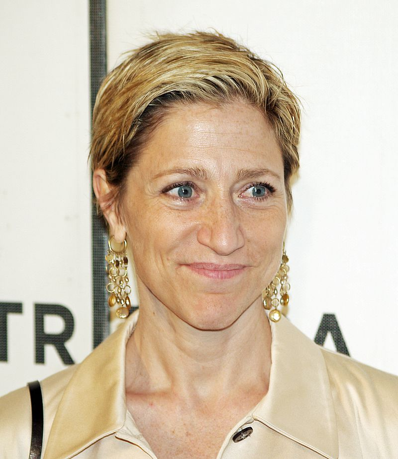

Personajes y Reparto
Anthony "Tony" Soprano (James Gandolfini) es el temperamental y violento jefe de facto de la familia criminal DiMeo de Nueva Jersey, y patriarca de la familia Soprano tras la muerte de Jackie Aprile (Michael Rispoli). Durante toda la serie, Tony lucha por equilibrar su vida familiar con su carrera en la Mafia. Por ello, Tony comienza a sufrir depresión y ataques de pánico debido a años de estrés en su "negocio", emociones reprimidas y una infancia difícil, por lo que acude en el primer capítulo a la psicóloga Dra. Jennifer Melfi (Lorraine Bracco). La Dra. Melfi es una mujer ítaloestadounidense de mediana edad, divorciada y con un hijo en la universidad. Trata a Tony Soprano de la mejor manera que puede, ya que a menudo se enfrentan por diversos problemas. Ambos albergan atracción sexual el uno por el otro, pero Melfi nunca la muestra abiertamente.
Añadiendo más complicaciones a su vida, la relación con su esposa Carmela Soprano (Edie Falco) es tensa, al igual que con sus dos hijos, Meadow (Jamie-Lynn Sigler) y Anthony Junior (Robert Iler).
El resto del reparto incluye miembros de la amplia familia de Tony, como su madre Livia (Nancy Marchand), su hermana Janice (Aida Turturro), su tío Corrado "Junior" Soprano (Dominic Chianese), quién es técnicamente el jefe de la familia en los comienzos de la serie (aunque rápidamente queda semiretirado al ser arrestado y esperar su juicio en prisión domiciliaria, hasta que queda por completo fuera del negocio debido a cuestiones de salud), su primo Tony Blundetto (Steve Buscemi) y su sobrino (en realidad, primo por matrimonio) y protegido Christopher Moltisanti (Michael Imperioli). Tanto Livia como Janice son astutas manipuladoras de los problemas emocionales. Su primo Tony Blundetto (Tony B) y su sobrino Chris forman parte de su "otra" familia, y sus acciones son una fuente adicional de conflictos. Christopher lucha contra su adicción a las drogas y el alcohol, y desea ganarse respeto, mientras que Tony B tiene la esperanza de ganarse la vida lícitamente, pero su violencia y su entorno se lo impiden.
El círculo íntimo de Tony en la familia criminal DiMeo incluye a Silvio Dante (Steven Van Zandt), Paul "Paulie Walnuts" Gualtieri (Tony Sirico) y Salvatore "Big Pussy" Bonpensiero (Vincent Pastore). Silvio es el consigliere y mejor amigo de Tony. Paulie y Pussy son veteranos soldados que trabajaron también con el padre de Tony; Paulie pronto se convirtió en capo, y finalmente, ascendido a subjefe. También en la organización criminal de Tony están Patsy Parisi (Dan Grimaldi) y Furio Giunta (Federico Castelluccio). Patsy es un soldado más calmado y el contable de la familia. Furio, por su parte, es fuerza importada de Italia tras una visita de Tony y su grupo a Nápoles y que actúa como ejecutor personal de Tony.
Otros personajes de importancia en la familia DiMeo son Bobby "Bacala" Baccalieri (Steven R. Schirripa), Richie Aprile (David Proval), Ralph Cifaretto (Joe Pantoliano), Eugene Pontecorvo (Robert Funaro) y Vito Spatafore (Joseph R. Gannascoli). Bobby es un subordinado de Junior al que Tony intimidaba al principio, pero más tarde aceptaría en su círculo. Ralph es listo, ambicioso y una importante fuente de ingresos para la familia, pero su arrogancia y tendencia a ser desagradable, irrespetuoso y violento no gusta en los altos cargos de la organización. Richie Aprile abandona la cárcel en la segunda temporada y rápidamente crea problemas en la organización. Pontecorvo es un soldado que se convierte en iniciado junto con Christopher. Spatafore es un exitoso trabajador que alcanzó las cotas más altas del equipo de Aprile, pero tiene un secreto personal que es un tabú en la organización.
Entre los amigos de la familia Soprano se incluyen Herman "Hesh" Rabkin (Jerry Adler), Adriana La Cerva (Drea de Matteo), Rosalie Aprile (Sharon Angela), Angie Bonpensiero (Toni Kalem), Artie Bucco (John Ventimiglia) y Charmaine Bucco (Kathrine Narducci). Hesh es consejero y amigo de confianza de Tony, pues ocupó la misma función con su padre. Adriana es la novia de Chris durante un largo tiempo; Rosalie es la viuda del anterior jefe de la familia, Jackie Aprile, e íntima amiga de Carmela; Angie es la esposa de Pussy Bonpensiero; y Artie y Charmaine son amigos de los Soprano desde la escuela y dueños del restaurante Vesubio. Charmaine no está de acuerdo con la idea de asociarse mucho con Tony y su círculo criminal, por lo que pide constantemente a su marido Artie —un hombre respetuoso con la ley y trabajador— que no deje entrar en el restaurante a ese tipo de clientes.
Carmine Lupertazzi (Tony Lip), John "Johnny Sack" Sacramoni (Vince Curatola), Phil Leotardo (Frank Vincent) y "Little" Carmine Lupertazzi (Ray Abruzzo) son miembros importantes de la familia criminal Lupertazzi de Nueva York y tienen muchos intereses comerciales con la familia Soprano. Aunque los intereses de ambas familias son a menudo un conflicto, Tony mantiene una cordial y amistosa relación con Johnny Sack, prefiriendo llegar a acuerdos que benefician a ambas familias. Su segundo al mando, y posterior sucesor, es Phil Leotardo, una persona menos agradable y de más dificultad para hacer negocios con Tony. Little Carmine es el hijo del primer jefe de la familia y compite por el poder con los demás.